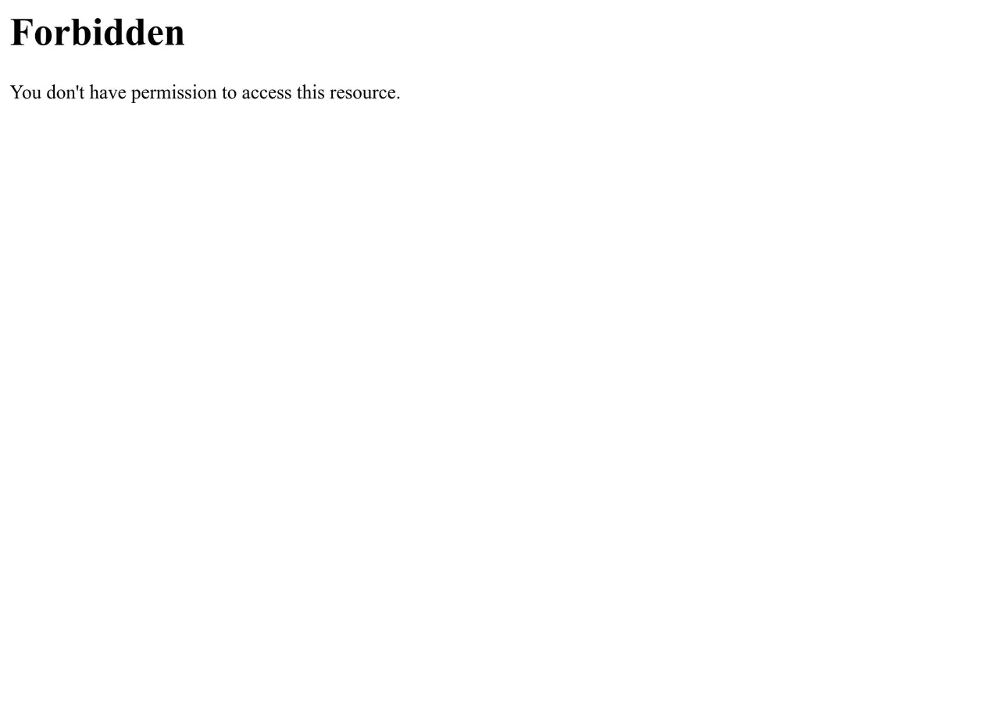

短答
403 状态表示服务器理解了请求并拒绝完成它。
这与表示目标不在的 404 不同，也与要求认证的 401 不同。对爬虫返回 403、对带 cookie 的浏览器返回 200 的产品 URL，对任何不发送这些 cookie 的人都是发现失败。SEO 健康在不带员工 cookie 的情况下获取并记录状态。
定义
阻止不熟悉的用户代理的防火墙规则，可以在安全变更之后造成这种模式。健康决定是哪些代理必须被允许获取公开站点。私有的管理 URL 应该继续拒绝。公开的规范 URL 不应该。截图是一张普通的 Forbidden 页面，是人看见的文字。它不是某个厂商的产品，也不是分数。
抓取怎样遇到这条规则
在没有登录 cookie 的情况下获取公开的规范 URL，并确认它们不是 403。
如果 403 页面有样式并且返回 403，状态是诚实的。如果它返回 200，你就在拦截之上又有一个软错误。修好状态和阻止公开获取的规则。不要把 403 URL 加进 sitemap 来“帮助”它。

要检查什么
- 不带员工 cookie 获取的公开 URL
- 403 保留给应该私有的路径
- 拦截页返回 403 而不是 200
- sitemap 中没有被拒绝的 URL
- 规则更改后重新获取的一条样例 URL
一个结构示例
机器人过滤之后，/products/valve 对普通爬虫获取返回 403，在市场团队的浏览器里返回 200。过滤器的允许列表加上公开路径。管理路径保持 403。一次不带 cookie 的再次获取确认了阀门 URL。不把排名声称附在防火墙厂商上。
它不声称什么
去掉意外的 403 不保证排名或引用。
Mika Visibility 把它归到哪里
Mika Visibility 把可抓取性放在 SEO 健康：robots 规则、状态码，以及爬虫能跟着走的路径。断开的路径和被挡住的模板是健康发现。缺主题不是。GEO 仍然依赖爬虫真正能到达的页面，但到得了并不等于替买家写好了答案。
Forbidden 页面是一次被拒绝的获取可能显示的内容。状态码仍然是要记录的事实。
常见问题
403 是什么意思？
403 状态表示服务器理解了请求并拒绝完成它。
哪些 URL 不应该返回它？
在没有登录 cookie 的情况下获取公开的规范 URL，并确认它们不是 403。
清掉 403 能保证排名吗？
去掉意外的 403 不保证排名或引用。
下一步
做一次结构化的 SEO + GEO 审计，查看健康发现、增长缺口和可以执行的蓝图。
更清晰的实体、答案、证据和上下文，会让页面更容易被理解与引用。任何回答产品中的结果都不作保证。